Objectives
In this Exercise you will learn how to:
- Stop and re-deploy the Managed Gateway
- View the incoming data in Monitor dashboards
Before you begin:
This Exercise requires that you have:
- completed the pre-requisites required for All Exercises and for Exercise 4
- completed the previous exercises
- verified the simulator is running as described in exercise 1
Re-Deploy the Managed Gateway
Go to where the current Managed Gateway docker container is running.
Use Ctrl-p & Ctrl-q to get back to the prompt.
Use the docker ps command to view the running docker containers.
Locate the name of the running Managed Gateway container, here it is fe25aa5216ad.
Use the docker kill <name> command to stop the docker container.
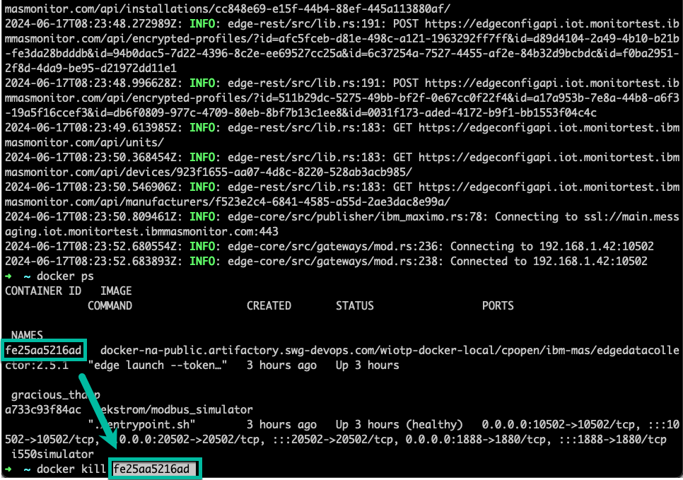
Navigate back to your Managed Gateway and press the View deployment instructions.
Click on the docker command to copy it to the clipboard:
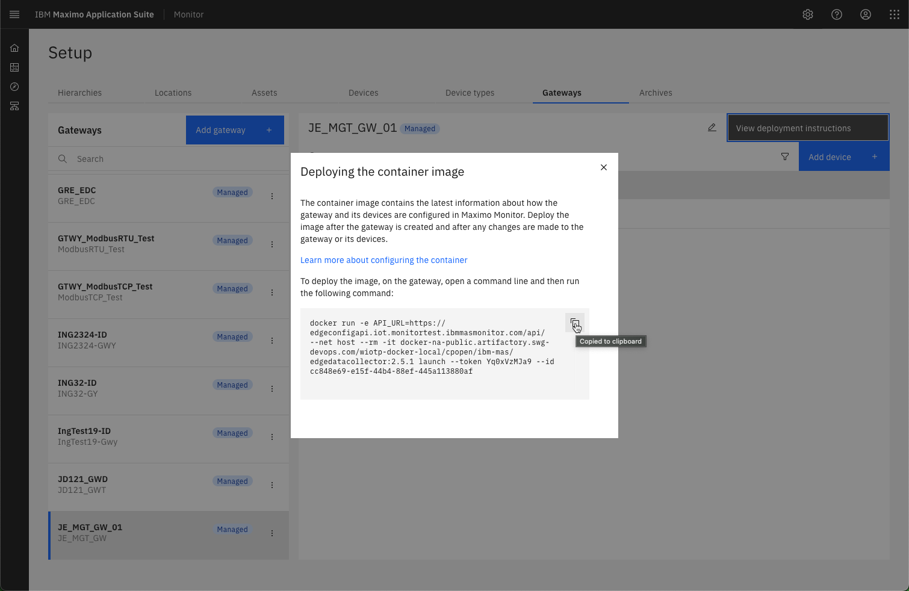
Get back to the prompt and then paste the docker command line from the clipboard. Click enter to execute it, and you should see something similar to the following: 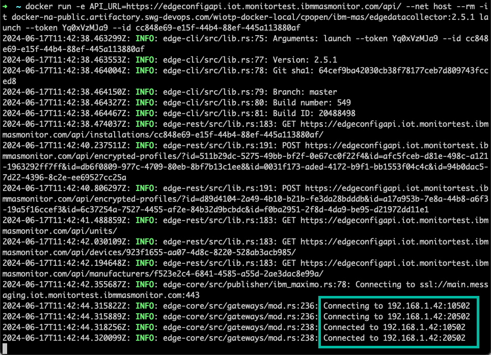
Tip
You can see that you successfully have connections to both the simulated Lenze i550 VFD's.
View data in Monitor Dashboards
Navigate to Monitor: 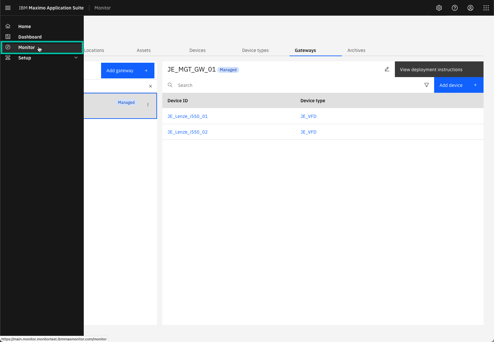
Select the Device types tab and search for your device type.
Select the XX_Lenze_i550_01 device and then the Metrics Dashboard:
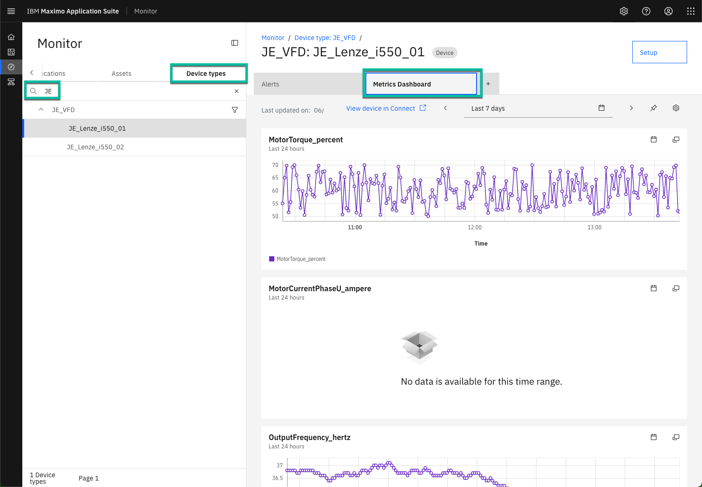
Tip
This has been running for a while. 😉
New in MAS 9.0
When adding an OT device to a Managed Gateway, Maximo Monitor automatically add all the relevant metrics, as well as creating the Metrics Dashboard with all the metrics.
Now select the XX_Lenze_i550_02 device and see you have only received a few data points
in the Metrics Dashboard:
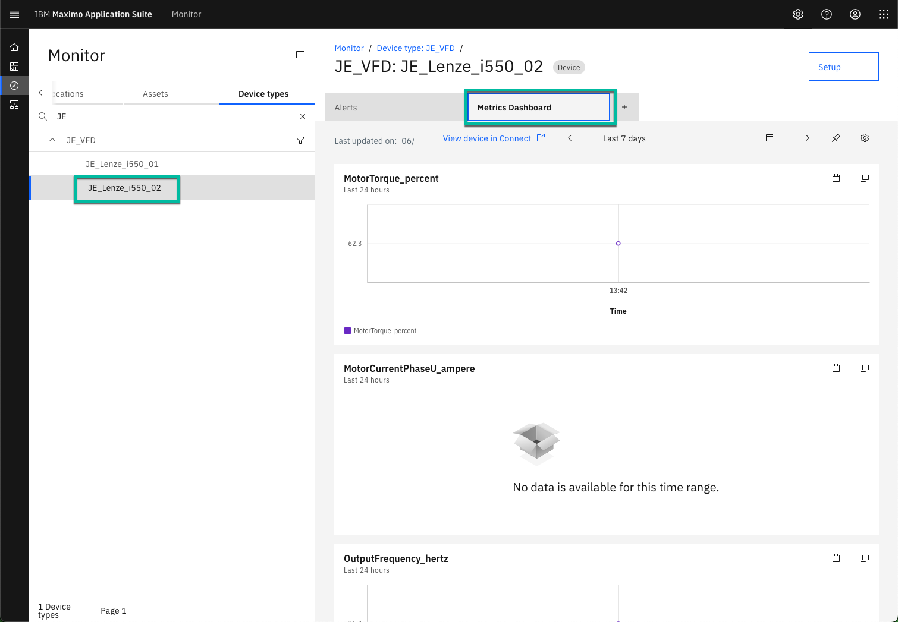
When running for a while, it could look something like this. Click on Setup:
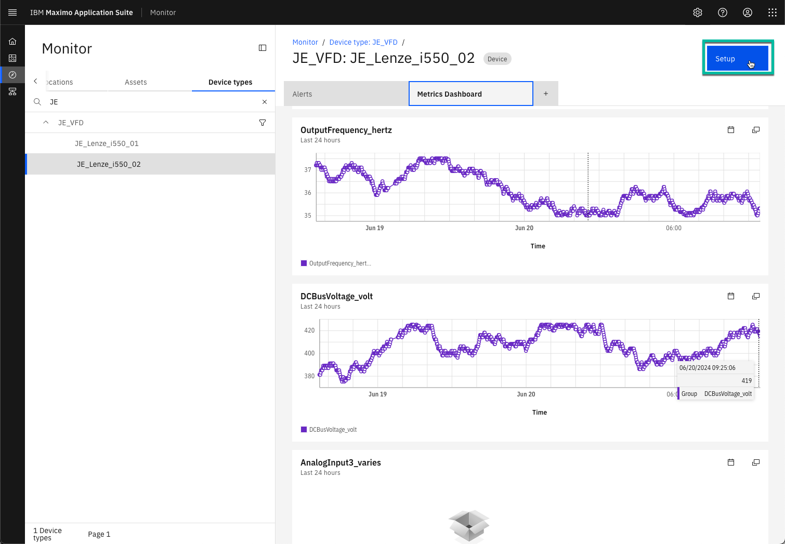
Tip
You don't need to wait until you see this beautiful line card before continueing. 🤗
Locate the Control Card Temperature in the Data tab and change the view to Last 24 hours:
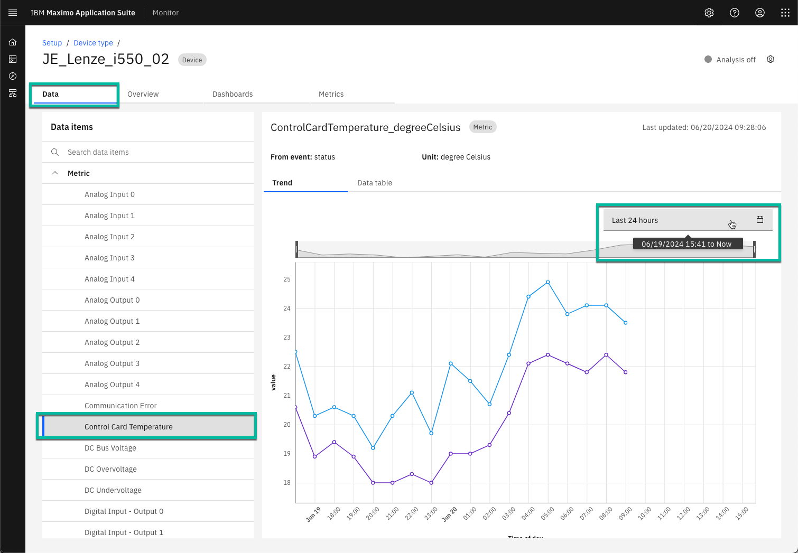
Now select the Data table tab to view the latest data in the database table:
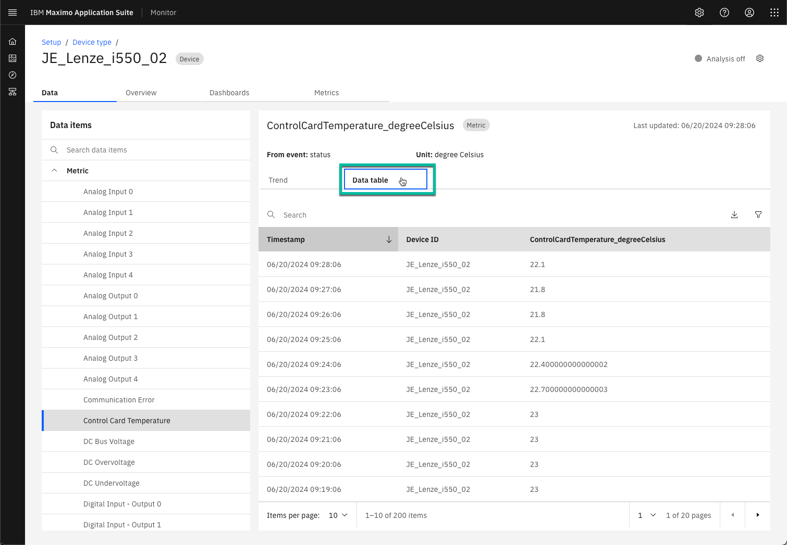
Finally click on the Metrics tab to view the selections you made when adding this device to the Managed Gateway:
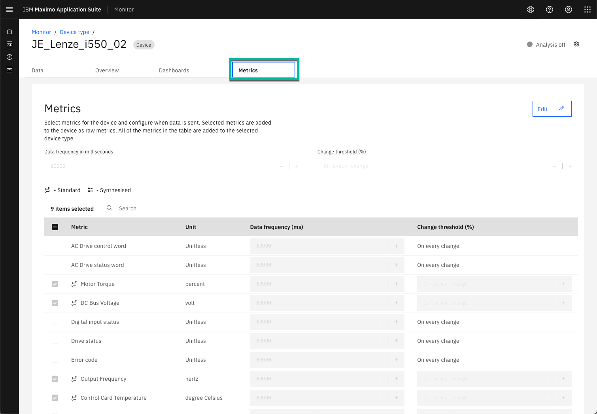
New in MAS 9.0
The definition of Metrics has moved to a separate tab.
In the Overview tab you'll find the definition of Dimensions as well as other information.
You could now potentially create a dashboard like this 😎: 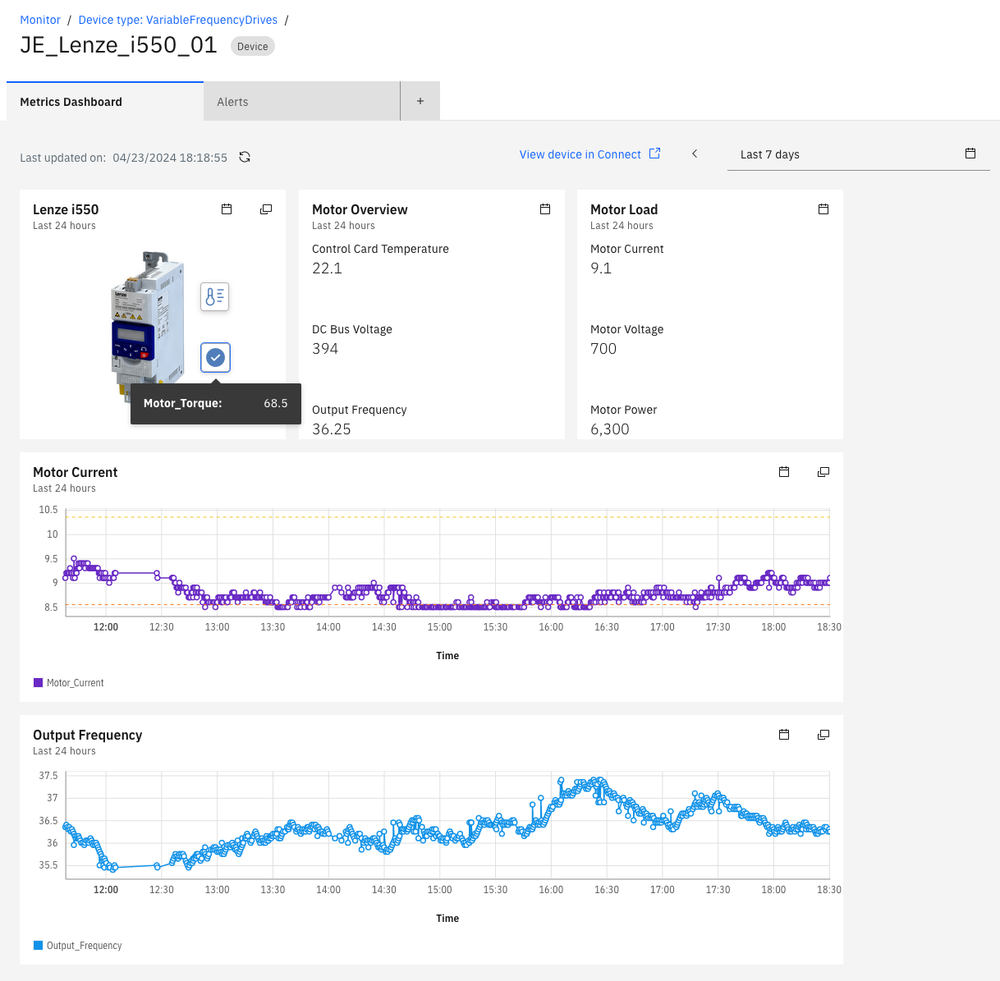
Congratulations you have successfully re-deployed and viewed data from both VFD's in the Monitor dashboard. This concludes this lab.